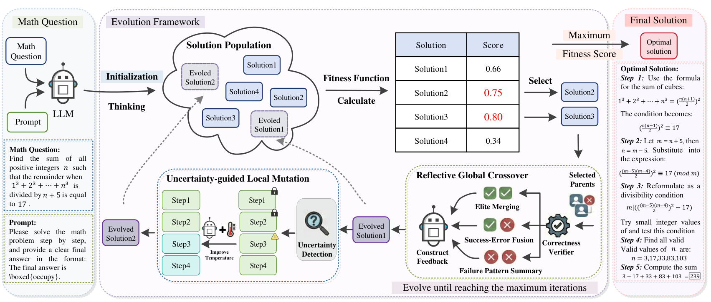

A genetic evolutionary framework that reframes Chain-of-Thought synthesis as a population-based search over reasoning trajectories.
CoTEvol treats reasoning trajectories as individuals in a population and iteratively improves them through biologically inspired genetic operators, guided by rule-based fitness.

Constructs high-level feedback to recombine complementary reasoning structures across parents — via Elite Merging, Success-Error Fusion, and Failure Pattern Summary.
Uses step-level entropy to locate the most unstable reasoning step, then adaptively raises the temperature to refine ambiguous parts while preserving stable prefixes.
Three lightweight rule-based verifiers — answer correctness, format matching, and cosine length reward — jointly score each candidate trajectory.
Boltzmann tournament selection balances exploitation and exploration, keeping selection pressure while preserving diversity until convergence.
A self-supervised variant replaces the correctness verifier with LLM self-evaluation, still yielding consistent gains over the base model.
Elicits the model's intrinsic reasoning potential, invoking stronger LLMs only for hard cases — a fallback used just 6.8% of the time on average.
Performance on eight mathematical benchmarks with Qwen2.5-7B-Instruct trained on the S1K dataset using different data synthesis methods. CoTEvol consistently outperforms both distillation (D-CoT) and self-synthesis (S-CoT) baselines.
| Method (S1K) | GSM8K | MATH500 | Minerva | GaokaoEn | Olympiad | College | AIME24 | AMC23 | AVG. |
|---|---|---|---|---|---|---|---|---|---|
| Base (Qwen2.5-7B-Instruct) | 79.6 | 69.4 | 35.7 | 55.3 | 34.7 | 35.8 | 13.3 | 47.5 | 46.4 |
| D-CoT (DeepSeek-R1) | 87.0 | 71.4 | 37.9 | 61.0 | 34.5 | 38.5 | 16.7 | 55.0 | 50.6 |
| S-CoT (Self-Refine) | 87.5 | 71.2 | 34.2 | 62.3 | 35.0 | 40.1 | 16.7 | 60.0 | 50.9 |
| S-CoT (Best-of-N) | 88.8 | 74.6 | 34.9 | 61.8 | 35.7 | 38.9 | 10.0 | 50.0 | 49.3 |
| CoTEvol (w/o Ground Truth) | 88.9 | 74.0 | 38.2 | 60.5 | 36.0 | 38.6 | 16.7 | 57.5 | 51.3 |
| CoTEvol (w/ Ground Truth) | 90.8 | 75.2 | 39.3 | 64.4 | 36.0 | 40.8 | 16.7 | 62.5 | 53.2 |
CoTEvol reaches a 53.2 average — +6.8 over the base model and +2.6 over the strongest baseline. Gains hold across foundational, intermediate, and competition-level tasks.
CoTEvol dramatically raises the share of problems for which a correct CoT is synthesized, especially with ground-truth supervision.
| Dataset | Original SR | Evolved SR (w/o GT) | Evolved SR (w/ GT) |
|---|---|---|---|
| S1K | 0.359 | 0.491 | 0.825 |
| LIMO | 0.420 | 0.537 | 0.881 |
Success rate more than doubles on S1K (0.359 → 0.825) and rises sharply on LIMO (0.420 → 0.881).
If you find CoTEvol useful in your research, please consider citing:
@inproceedings{wang2026cotevol,
title = {CoTEvol: Self-Evolving Chain-of-Thoughts for Data
Synthesis in Mathematical Reasoning},
author = {Wang, Zhuo and Zhang, Zhuo and Li, Yafu and
Cheng, Yu and Qu, Lizhen and Xu, Zenglin},
booktitle = {Proceedings of the Association for Computational
Linguistics (ACL)},
year = {2026},
eprint = {2604.14768},
archivePrefix = {arXiv},
primaryClass = {cs.AI}
}